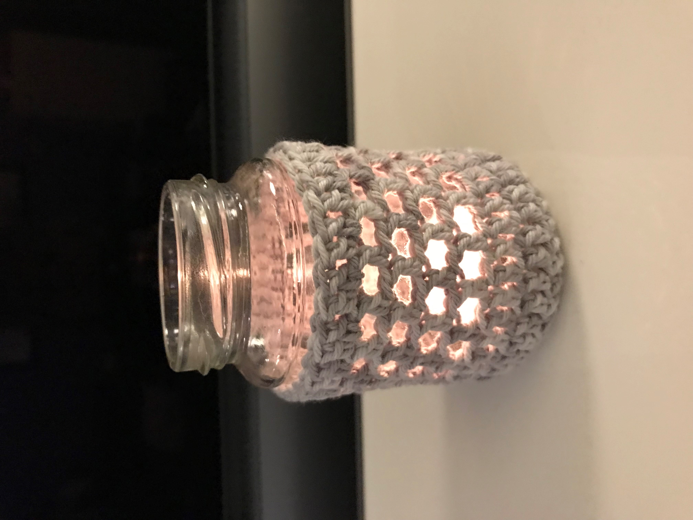

Er zijn verschillende workshops die ik geef. Hieronder een overzicht van alle workshops.
Potje voor waxinelichtje omhaken
Het is weer tijd om op de donkere dagen wat lichtjes te laten schijnen. Vind je het leuk om zelf creatief bezig te zijn, dan is het leuk om glazen potjes van bijvoorbeeld groenten om te haken. Dit doen we in een groepje van maximaal 4 personen.
In één les van 1,5 uur ga je met een waxinelichtjeshouder naar huis.
Je kunt ze van iedere dikte katoen of ander garen maken; van heel fijn tot grof.
Wat heb je nodig?
- Garen (graag zelf meenemen)
- Haaknaald behorende bij de dikte van je garen (graag zelf meenemen)
- Glazen potje (graag zelf meenemen)
- Schaartje
- Naald om de draadjes af te hechten
De workshop is inclusief koffie, thee en wat lekkers.
Heb je interesse dan kan je me bellen of mailen. Bij voldoende belangstelling zal ik (in overleg) een datum afspreken.
Ik hoop je gauw te zien!

Pompoem haken of breien
Het is weer herfst en vind je het leuk om die sfeer ook naar binnen te halen? Dan is de workshop pompoen haken of breien erg leuk om te doen. Dit doen we in een groepje van maximaal 4 personen.
In één les van 1,5 uur ga je met een pompoen naar huis en weet je hoe je het patroon kunt vergroten of verkleinen, zodat je er een hele familie van kan maken.
Je kunt ze van iedere dikte katoen of ander garen maken; van heel fijn tot grof.
Wat heb je nodig?
- Garen (graag zelf meenemen)
- Haaknaald behorende bij de dikte van je garen (graag zelf meenemen)
- Schaartje
- Vulling
- Naald om de draadjes af te hechten
- Takje om in de bovenkant te steken
Op het garen en haak- en breinaalden na, is dus alles in het handwerkcafé aanwezig.
De workshop is inclusief koffie, thee en wat lekkers.
Heb je interesse dan kan je me bellen of mailen. Bij voldoende belangstelling zal ik (in overleg) een datum afspreken.